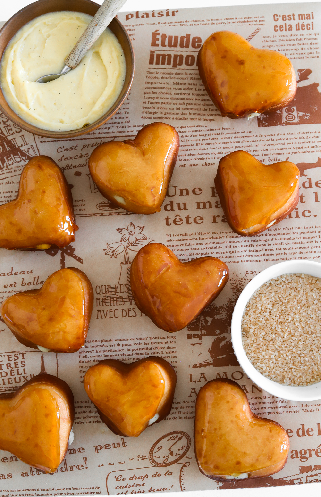

Creme Brulee Donut

Description
Image was found from Moribyan.
Creme Brulee Donuts are one of the hardest recipes to ever make! They are perfect for ASMR tho :)
Recipe also adapted from Moribyan.
Ingredients
Donut Dough
- 3 2/3 cup all purpose flour
- 1 1/4 cup of milk
- 1 1/2 teaspoon instant yeast
- 1/3 cup sugar
- 1 teaspoon salt
- 1 large egg
- 6 tablespoon of unsalted butter
- oil for frying
Custard
- 1 2/3 cup milk
- 2 teaspoon vanilla bean paste
- 1/4 teaspoon salt
- 1/4 cup cornstarch
- 1/2 cup sugar
- 4 egg yolks
- 2 tablespoon unsalted butter
Brulee
- 1 cup sugar
- 1/4 cup water
Steps
- Custard: In a mixing bowl, start by mixing egg yolks, cornstarch, sugar, and salt.
- In a stove pan, mix milk and vanilla. Heat until you see bubbles at the edges.
- Slowly add milk to egg mixture and then pour the egg mixture into pan and heat until thickened! Cool in fridge.
- Donut Dough: In a large mixing bowl, add warm milk, yeast, salt, sugar, and egg and mix. Then add butter and flour.
- Knead dough for 2-3 minutes and transfer to oiled bowl. Cover and let it sit for the whole night.
- Roll out dough and use a cookie cutter to cut out shapes until no more dough is left.
- Fry raw donuts in oil at 325F.
- Once fried place on wire rack and repeat till all dough has been fried.
- Use a piping bag fitted with a small tip, and add in custard. Poke hole in donut and fill with piping bag.
- For Brulee: (THIS WAS SO HARD) To a pan add in sugar and water and put on heat until it is golden brown. Do not stir or touch until then.
- Dip donuts. Note: Try not to burn fingers off.
- Enjoy!